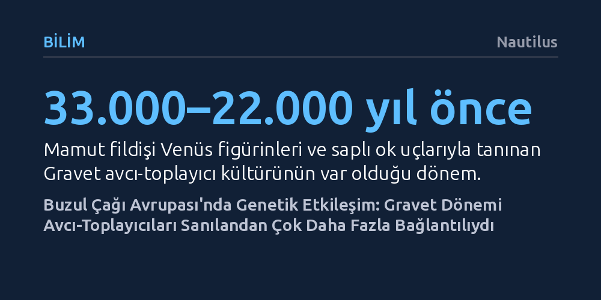

BILIM · Nautilus · 2026-10-25
Fransa'da bulunan 30 bin yıllık eksiksiz bir genom, Buzul Çağı'ndaki Gravet avcı-toplayıcılarının sanıldığı gibi yalıtılmış iki gruba ayrılmadığını gösterdi. Genetik modellemeler, yaklaşık 32 bin yıl önce Doğu Avrupa'dan Batı Avrupa'ya belirgin bir gen akışı gerçekleştiğini kanıtlıyor.
Son Buzul Çağı'nın zorlu iklim koşullarında dahi insan topluluklarının coğrafi olarak yalıtılmış yaşamadığını, binlerce kilometreye yayılan evlilik ve genetik etkileşim ağları kurduğunu gösteriyor.

Günümüzden yaklaşık 33.000 ila 22.000 yıl önce Avrupa kıtasına yayılan Gravet kültürü, Üst Paleolitik dönemin en ayırt edici avcı-toplayıcı topluluklarından biriydi. Mamut fildişinden ustalıkla yonttukları Venüs heykelcikleri ve geliştirdikleri saplı mızrak uçlarıyla tanınan bu insanlar, kıtanın zorlu buzul ikliminde geniş bir kültürel etki alanı oluşturmuştu. Arkeolojik bulgular ortak bir alet ve sanat geleneğine işaret etse de, popülasyon genetiği uzun süredir farklı bir hikâye anlatıyordu.
Önceki genetik araştırmalar, Gravet insanlarının biyolojik olarak iki ayrı gruba ayrıldığını gösteriyordu: Batı Avrupa'da kümelenen bir soy hattı ile Orta ve Doğu Avrupa'da yaşayan ayrı bir soy hattı. Bu genetik ayrışma, dönemin dondurucu çevre koşullarında insan gruplarının birbirinden yalıtılmış ve bölgesel sınırlara hapsolmuş şekilde yaşadığı varsayımını besliyordu. Ancak Science Advances dergisinde yayımlanan yeni bir çalışma, bu iki dünya arasındaki sınırların sanıldığı kadar kesin olmadığını kanıtladı.
Paleogenetikçilerden oluşan uluslararası bir araştırma ekibi, Avrupa'nın farklı yerlerinde 30.000 ila 22.000 yıl önce yaşamış çeşitli Gravet bireylerinin kalıntılarından antik DNA izole ederek genomlarını diziledi. Bu örnekler arasında en kritik olanı, Fransa'nın güneybatısında, İspanya sınırına oldukça yakın konumdaki İsturitz Mağarası'nda bulunan bir kadına aitti. Bu birey, bölgede bugüne kadar keşfedilen en eski ve eksiksiz tarihöncesi genomu bilim dünyasına kazandırdı.
Elde edilen genetik veriler ayrıntılı biçimde incelendiğinde şaşırtıcı bir gerçek gün yüzüne çıktı: İsturitz kadınının genomu ağırlıklı olarak Batı Avrupa soy hatlarıyla eşleşmekle birlikte, belirgin ölçüde Orta ve Doğu Avrupa genetik izlerini de taşıyordu. Gelişmiş nüfus genetiği modellemelerini kullanan araştırmacılar, günümüzden yaklaşık 32.500 ila 31.500 yıl önce doğudan batıya doğru güçlü bir gen akışı dalgasının gerçekleştiğini tespit etti.
İsturitz kadınının taşıdığı bu karma genetik yapı münferit bir tesadüf değildi. Fransa'nın Ormesson bölgesinde keşfedilen bir başka Gravet bireyinde de benzer genetik verilerin saptanması, doğu ve batı arasındaki bu etkileşimin genele yayıldığını doğruladı. Araştırma ekibine göre bu durum, Pirene eteklerindeki İsturitz Mağarası'nın sadece geçici bir barınak değil, farklı coğrafyalardan gelen avcı-toplayıcı kabilelerin buluştuğu, kaynaştığı ve eşleştiği stratejik bir toplanma merkezi olduğuna işaret ediyor.
Bu bulgular, son buzul çağının en çetin evrelerine doğru ilerlenirken dahi insan topluluklarının sanılanın aksine içe kapalı ve kopuk yaşamadığını belgeliyor. Kıtayı boydan boya aşan bu hareketlilik ve evlilik bağları, zorlu çevre koşullarına karşı hayatta kalmanın en kritik anahtarının geniş sosyal dayanışma ağları olduğunu ortaya koyuyor.